MAXimal
добавлено: 10 Jun 2008 18:05
редактировано: 24 Aug 2011 1:41
Содержание [скрыть]
Код Грея
Определение
Кодом Грея называется такая система нумерования неотрицательных чисел, когда коды двух соседних чисел отличаются ровно в одном бите.
Например, для чисел длины 3 бита имеем такую последовательность кодов Грея: , , , , , , ,  . Например, 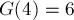.
. Например, 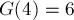.
Этот код был изобретен Фрэнком Грэем (Frank Gray) в 1953 году.
Нахождение кода Грея
Рассмотрим биты числа  и биты числа 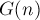. Заметим, что
и биты числа 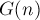. Заметим, что  -ый бит равен единице только в том случае, когда -ый бит равен единице, а
-ый бит равен единице только в том случае, когда -ый бит равен единице, а  -ый бит равен нулю, или наоборот (-ый бит равен нулю, а -ый равен единице). Таким образом, имеем: 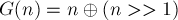>1)">:
-ый бит равен нулю, или наоборот (-ый бит равен нулю, а -ый равен единице). Таким образом, имеем: 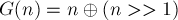>1)">:
int g (int n) { return n ^ (n >> 1); }
Нахождение обратного кода Грея
Требуется по коду Грея  восстановить исходное число .
восстановить исходное число .
Будем идти от старших битов к младшим (пусть самый младший бит имеет номер 1, а самый старший —  ). Получаем такие соотношения между битами
). Получаем такие соотношения между битами  числа и битами
числа и битами  числа :
числа :
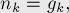
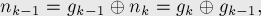
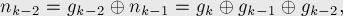
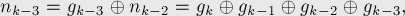
В виде программного кода это проще всего записать так:
int rev_g (int g) { int n = 0; for (; g; g>>=1) n ^= g; return n; }
Применения
Коды Грея имеют несколько применений в различных областях, иногда достаточно неожиданных:
- -битный код Грея соответствует гамильтонову циклу по -мерному кубу.
- В технике, коды Грея используются для минимизации ошибок при преобразовании аналоговых сигналов в цифровые (например, в датчиках). В частности, коды Грея и были открыты в связи с этим применением.
- Коды Грея применяются в решении задачи о Ханойских башнях.
Пусть
— количество дисков. Начнём с кода Грея длины , состоящего из одних нулей (т.е. 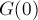), и будем двигаться по кодам Грея (от 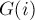 переходить к 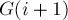). Поставим в соответствие каждому -ому биту текущего кода Грея -ый диск (причём самому младшему биту соответствует наименьший по размеру диск, а самому старшему биту — наибольший). Поскольку на каждом шаге изменяется ровно один бит, то мы можем понимать изменение бита как перемещение -го диска. Заметим, что для всех дисков, кроме наименьшего, на каждом шаге имеется ровно один вариант хода (за исключением стартовой и финальной позиций). Для наименьшего диска всегда имеется два варианта хода, однако имеется стратегия выбора хода, всегда приводящая к ответу: если нечётно, то последовательность перемещений наименьшего диска имеет вид 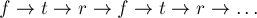 (где  — стартовый стержень,
— стартовый стержень,  — финальный стержень,
— финальный стержень,  — оставшийся стержень), а если чётно, то 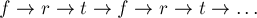.
— оставшийся стержень), а если чётно, то 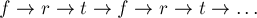. - Коды Грея также находят применение в теории генетических алгоритмов.
Задачи в online judges
Список задач, которые можно сдать, используя коды Грея: